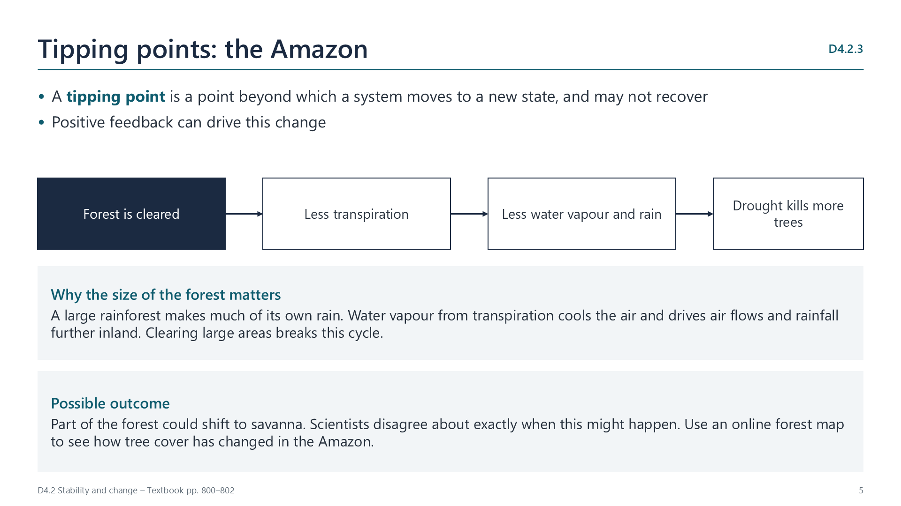
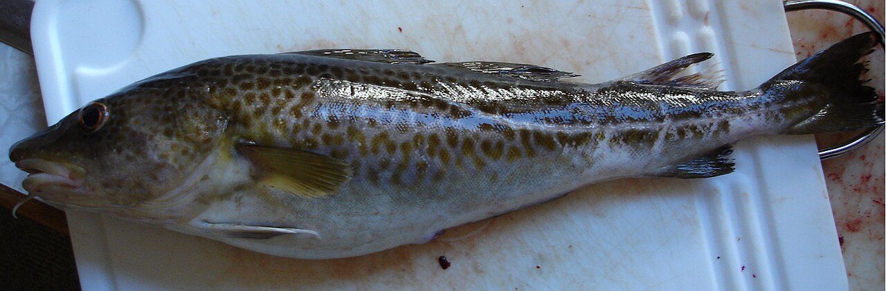
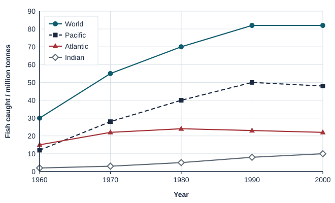
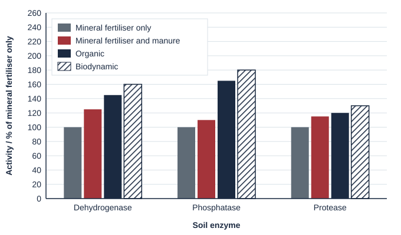
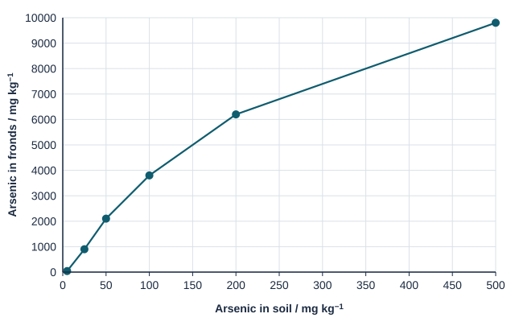
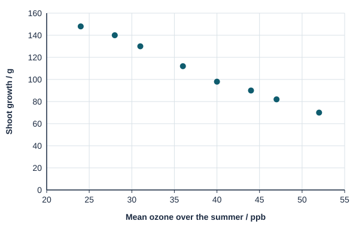

Written for this site from the class slides, with textbook page references for each statement. The chapter is on pages 798–813 of the course textbook. Image credits are on slide 16.
Keeping ecosystems stable
D4.2.1
Stability in natural ecosystems
pp. 798–799
Forests, deserts and other ecosystems have continued over long periods, and some may have lasted for millions of years: rainforests in South East Asia are thought to be at least 70 million years old. This is stability.
D4.2.2
What stability requires
pp. 799–803
Ecosystems need a supply of energy, recycling of nutrients, genetic diversity, and climate within tolerance limits. Sealed mesocosms can be used to investigate this, as energy can pass through, but matter cannot.
D4.2.3
The Amazon as a possible tipping point
pp. 800–802

A large area of rainforest is needed to produce atmospheric water vapour by transpiration, which brings cooling, air flows and rainfall. Removing trees reduces rain, which can kill more trees. A tipping point may be reached, beyond which the forest changes to another state. Some estimates put it at 20–25% deforestation, and about 17% of the original forest had gone by 2018.
D4.2.4
Keystone species
p. 805
These have a disproportionate effect on community structure, and the ecosystem may collapse if they are removed. Beavers and wolves are examples. So is the agouti, a rodent that buries Brazil nuts and so spreads the seeds of the Brazil nut tree.
Using natural resources
D4.2.5
Sustainability of harvesting
pp. 806–807
Harvesting is sustainable if its rate is lower than the rate of replacement. Timber in Finland is managed with a legal duty to regrow, whereas Atlantic cod stocks have collapsed from over-fishing.
D4.2.6
Sustainability of agriculture
pp. 807–808
Consider soil erosion, leaching of nutrients, the supply of fertilizers and other inputs, pollution from agrochemicals, and carbon footprint.
Pollution and recovery
D4.2.7
Eutrophication
pp. 808–810
Nitrate and phosphate from fertilizers leach into water, and algae bloom. Plants die in the shade, and decomposers use up oxygen, raising the biochemical oxygen demand. BOD is measured by keeping a water sample in the dark at 20 °C for five days and recording the fall in oxygen. Fish and other organisms can die as a result.
D4.2.8
Biomagnification
pp. 810–811
Toxins that build up in tissues reach higher concentrations at each trophic level, since each consumer eats many organisms. DDT and mercury are examples.
Watch out: bioaccumulation is build-up within one organism. Biomagnification is the rise from level to level.
D4.2.9
Plastics in the oceans
pp. 812–813
Plastics persist, because they are not biodegradable. Macroplastics entangle animals or fill their stomachs, as in Laysan albatross chicks and sea turtles. Microplastics, smaller than 5 mm, enter food chains.
D4.2.10
Rewilding
p. 813
Methods include returning apex predators and other keystone species, reconnecting habitats over large areas, and reducing human impact. Natural processes can then run again.
Videos
Select a video to play it here. Select it again to close it.
Print this guide and complete it as you work through the slides and videos. It asks for your own explanations, so close the notes while you try each section.
A printable worksheet covering all ten statements, from quick recall to data questions and a longer answer. It has 42 marks and takes about 40 minutes, or you can do one section at a time.
Questions built on realistic experimental data, in the style of Paper 1B and Paper 2. Work them on paper and show your working. 24 marks in total. Your teacher has the mark scheme.
Fish catches
6 marks

Image: Zserghei, Public domain, Wikimedia Commons.
The Food and Agriculture Organization (FAO) records the mass of fish caught from the sea each year. The graph shows catches from three oceans and the whole world.

Calculate the percentage increase in world catch from 1960 to 2000. [1]
Compare the catches from the Atlantic and the Pacific. [2]
Fishing fleets grew larger throughout this period. Suggest why the world catch stopped increasing after 1990. [2]
State one other type of data needed to decide whether a fish population is being overfished. [1]
Farming methods and soil life
6 marks
A 21-year trial in Switzerland compared four farming methods. The activity of three soil enzymes, made by soil microorganisms, was measured as a percentage of the activity in soil given mineral fertiliser only.

Identify the enzyme most affected by the farming method. [1]
Identify the enzyme least affected by the farming method. [1]
List the farming methods in order of dehydrogenase activity, from lowest to highest. [1]
Suggest why soil enzyme activity is higher with organic methods. [2]
State one reason why high soil enzyme activity helps farming to be sustainable. [1]
A fern that removes arsenic
6 marks
Chinese brake fern (Pteris vittata) can take up large amounts of arsenic, a poison. Ferns were grown for 20 weeks in soils with different arsenic concentrations, and arsenic in the fronds (leaves) was measured.

The bioconcentration factor is arsenic in fronds divided by arsenic in soil. Calculate it for soil with 100 mg kg−1 arsenic. [1]
Describe the relationship between arsenic in the soil and in the fronds. [2]
Suggest how this fern could be used to clean up polluted land. [2]
Suggest one problem with this method. [1]
Air pollution and tree growth
6 marks
Air pollution was measured in New York City and in nearby rural areas over one summer.
City
Rural
pH of rain
4.2
4.5
Nitrogen dioxide / ppb
32
9
Sulfur dioxide / ppb
6
2
Ozone / ppb
28
44
Compare the acidity of rain in the city and in rural areas. [1]
Compare the air pollution in the city and in rural areas. [2]
Cottonwood saplings were grown at eight sites in and around the city, and their shoot growth was measured.

Describe the relationship between ozone and shoot growth. [1]
Cottonwood grew about twice as fast in the city as in rural areas. Suggest a hypothesis to explain this, using all the data. [2]
Practical
Fertiliser and aquatic plant growth
Lab20 min, then 2 weeksD4.2.7
You will need: Duckweed, clear containers, pond or aged tap water, diluted plant fertiliser
Set up containers with a range of fertiliser concentrations
Add the same number of duckweed fronds to each
Count fronds every few days for two weeks, in the same light
Plot growth, and link it to what happens in eutrophication
Safety: Wash hands after handling. Dispose of plants in general waste, not in drains or natural water.
Carry this out with your teacher's supervision and follow your school's lab rules.
Nature of science and TOK
Nature of science
Experiments
In 1966 Robert Paine removed a sea star from an area of shore and saw diversity fall, leading to the idea of keystone species.
Theory of knowledge
Is removing part of a system a fair way to learn about it?
Manipulating nature can reveal hidden links, but it also interferes. Consider when knowledge justifies that interference.
Syllabus statements
Summarised in our own words. Use each code to find the exact wording in your textbook or the IB subject guide.
D4.2.1Stability as a feature of natural ecosystemsp. 798
D4.2.2What ecosystems need in order to stay stablep. 799
D4.2.3Amazon deforestation as a possible tipping pointp. 800
D4.2.4How keystone species help to keep ecosystems stablep. 805
D4.2.5Judging whether harvesting a natural resource is sustainablep. 806
D4.2.6What affects the sustainability of farmingp. 807
D4.2.7How leaching causes eutrophication in freshwater and marine ecosystemsp. 808
D4.2.8How pollutants build up along food chains by biomagnificationp. 810
D4.2.9What microplastics and macroplastics do to the oceansp. 812
D4.2.10Rewilding: bringing natural processes back to ecosystemsp. 813